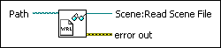

Load VRML File VI
Owning Palette: File Loading VIs
Requires: Full Development System
Loads a three-dimensional object model saved in Virtual Reality Modeling Language (VRML) format to display in a 3D scene. VRML files commonly appear with a .wrl file extension.

 Add to the block diagram Add to the block diagram |
 Find on the palette Find on the palette |